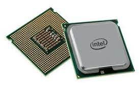
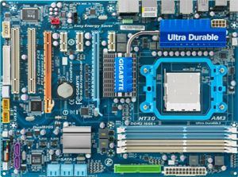

Agar lebih memahami apa arti komputer, maka kita dapat merujuk pada pendapat para ahli berikut ini:
Komputer adalah alat yang dipakai untuk mengolah data menurut prosedur yang telah dirumuskan. Kata computer pada awalnya dipergunakan untuk menggambarkan orang yang perkerjaannya melakukan perhitungan aritmetika, dengan atau tanpa alat bantu, tetapi arti kata ini kemudian dipindahkan kepada mesin itu sendiri.
Komponen-komponen pada komputer sanagatlah rumit dan banyak. Oleh karena itu mari kita bahas komponen-komponen komputer secara sederhana, agar mudah dipahami.
- Procesor
Processor adalah salah satu komponen inti yang terdapat dalam CPU komputer. Sebab, jika tidak ada processor, kemungkinan perangkat komputer tidak dapat bekerja sama sekali. Oleh sebab itu, banyak yang menyebutkan bahwa processor adalah otak dari komputer. Semua proses maupun perintah akan dikerjakan pada processor meskipun masih dengan bantuan komponen-komponen lainnya. Maka demikian, semakin tinggi kecepatan suatu processor, maka semakin cepat pula komputer dalam memproses berbagai macam data

- Motherboard
Merupakan sebuah papan sirkuit tempat berbagai komponen elektronik dan komputer lainnya dipasang dan bisa terhubung satu dengan yang lain.
Adapun komponen-komponen yang menjadi bagian inti dalam motherboard ini adalah processor, sound card, video card, hard disk, dan lain sebagainya.
Motherboard juga berfungsi sebagai media penghubung untuk setiap komponen komputer agar dapat saling berkomunikasi dengan komponen komputer lainnya.

- RAM (Random Acces Memory)
RAM (Random Access Memory) merupakan salah satu komponen yang terdapat pada bagian unit CPU. RAM juga memiliki kedudukan yang penting bagi perangkat
komputer. Pasalnya, komponen yang satu ini bekerja sebagai tempat menampung data sementara yang telah diproses processor sebelum dilanjutkan kepada
komponen-komponen lain.
.jpg)
- Hardisk(HDD)
Hardisk juga berfungsi untuk menyimpan berbagai data dan juga menyimpan berbagai sistem operasi dari suatu perangkat komputer itu sendiri.
Hardisk biasanya menggunakan perhitungan byte. Dan semakin besar kapasitas hardisk, maka semakin banyak pula data-data konvensional yang dapat anda simpan.
Ukuran kapasitas Hardisk yang beredar dipasaran biasanya bervariasi, mulai dari 250 GB, 500 GB, 1 TB, hingga 3 TB
- VGA CARD (Video Graphic Adapter)
VGA (Video Graphic Adapter) merupakan salah satu komponen yang dirasa sangat penting untuk sebuah perangkat komputer. Sebab,
komponen yang satu ini berfungsi sebagai pengolah data grafis sebelum ditampilkan ke monitor. Tanpa VGA, maka layar komputer bisa dipastikan
tidak menampilkan apa-apa, alias blank. Selain hal itu, VGA juga sangat penting untuk menentukan kualitas gambar yang ditampilan pada monitor komputer.
.jpg)
- Power Supply
merupakan bagian dari sistem komputer dan unit CPU yang berfungsi sebagai pembagi daya (sumber arus listrik) pada setiap komponen-komponen komputer.
Selain itu, Power Supply juga berfungsi merubah tegangan DC menjadi AC sebelum dialirkan ke setiap komponen-komponen komputer itu sendiri.
.jpg)
- CD/DVD ROM
CD/DVD ROM atau juga yang bisa disebut dengan optical disk drive ini adalah piranti yang dapat digunakan untuk menulis dan membaca kaset
atau kepingan CD/DVD. Selain itu, CD/DVD ROM juga dapat digunakan untuk mem-burning atau meng-copy CD dengan menggunakan berbagai software seperti Nero,
Infra Recorder, dan sebagainya.
.jpg)
- Kipas Processor
Komponen yang satu ini merupakan sebuah perangkat yang dipekerjakan untuk membantu kinerja suatu processor.
Kipas Processor berfungsi sebagai pendingin dan menjaga agar suhu processor tetap dingin dan stabil. Hal ini bertujuan agar perangkat processor
komputer kita tidak cepat overhead maupun rusak.
.jpg)
- Casing CPU
Casing CPU biasanya terbuat dari plastik dan beberapa juga terbuat dari besi, stainless, dan lain sebagainya.
Casing ini berguna untuk melindungi berbagai komponen-komponen yang terdapat dalam CPU, tentunya untuk lebih melindungi dari debu, panas,
air, atau hal-hal lain yang dikhawatirkan akan mengganggu kinerja CPU itu sendiri.
.jpg)
Pada dasarnya fungsi komputer sangat beragam, tergantung pada para penggunanya. Mengacu pada pengertian komputer di atas, berikut adalah fungsi utamanya:
- Data Input
Komputer dapat menerima informasi atau data dari sumber lain. Data tersebut diterima melalui aktivitas di keyboard, mouse, dari komputer lain atau peralatan lainnya.
- Data Processing
Salah satu fungsi utama komputer adalah untuk melakukan pengolahan data sehingga menghasilkan output, yaitu berupa informasi. Umumnya, data yang diolah di dalam komputer adalah berbentuk teks, gambar, audio, video, grafik, dan lainnya.
- Data Output
Fungsi komputer berikutnya adalah untuk menghasilkan output/ informasi setelah melalui proses pengolahan data. Informasi tersebut dapat disajikan melalui monitor, alat printer, dan speaker.
- Data Storage
Komputer juga dapat berfungsi sebagai tempat untuk menyimpan data sehingga dapat ditemukan dengan mudah dan digunakan kembali. Data tersebut dapat disimpan di dalam memori internal komputer maupun memori eksternal.
- Data Movement
Fungsi lain dari komputer adalah untuk memindahkan data dari satu komputer ke komputer lainnya atau berbagai alat output lainnya.
Jenis-Jenis Komputer
Berdasarkan bentuk dan ukurannya, komputer dapat dibedakan menjadi tujuh jenis komputer. Adapaun jenis-jenis komputer adalah sebagai berikut:
- Komputer Portabel
Ini adalah jenis komputer yang mudah dibawa kemana saja, dimana penggunaannya untuk keperluan penelitian di lapanan dan berpindah-pindah. Jenis komputer ini kurang populer karena cenderung berat dan lebih besar dari laptop pada umumnya.
- Komputer Desktop
Sesuai dengan namanya, ini adalah komputer yang ada di atas meja. Komputer ini memiliki CPU yang terpisah dari monitor dan keyboard.
- Komputer Palmtop
Ini adalah komputer yang bentuknya kecil dan bisa digenggam. Komputer jenis ini sudah sangat jarang digunakan sejak ditemukannya Smartphone.
- Komputer Tower
Ini adalah komputer yang bentuknya lebih besar dari komputer desktop dan biasanya diletakkan di atas atau samping meja. Komputer ini dapat ditambahkan perangkat pendukung karena memiliki expansionslot.
- Komputer Notebook
Ini adalah jenis laptop namun dengan ukuran yang lebih tipis. Umumnya banyak digunakan oleh pelajar, pengajar, dan peneliti yang membutuhkan perangkat komputer yang ringkas dan ringan.
- Handbook (Sub-notebook)
Ini adalah jenis notebook yang ukurannya lebih kecil dari notebook pada umumnya. Umumnya handbook memiliki processor dengan spesifikasi yang rendah.
- Komputer Laptop
Ini adalah jenis komputer yang dapat diletakkan di pangkuan penggunanya. Laptop memiliki CPU, monitor, dan keyboard yang menyatu dan mudah dibawa kemana-mana.